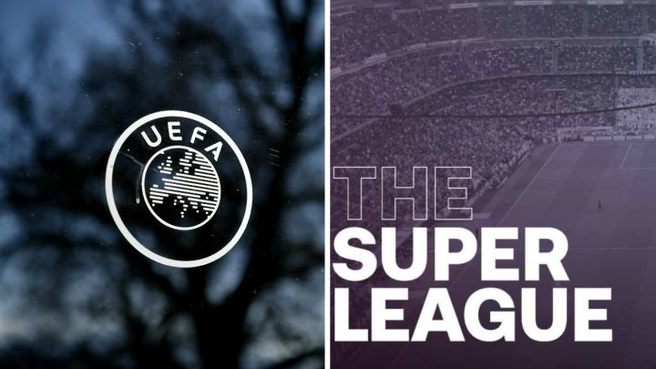

¿Qué es la Superliga?
La Superliga es el intento de crear una nueva liga por Florentino Pérez, el presidente del Real Madrid, que tenía la intención de agrupar a los mejores de cada liga y hacer una nueva liga para obtener así más beneficios por los perdidos por el Covid-19. Esto a principio fue apoyado por los grandes clubes, pero no por los aficionados, por lo que con el paso del tiempo los equipos fueron abandonando este evento poco a poco, hasta quedar en ellos el Real Madrid y el FC Barcelona.
Más información sobre la última hora de la Superliga.¿UEFA o Superliga?
Esto es un debate que se ha generado en la últimas horas puesto a que la UEFA y la FIFA se han puesto de acuerdo para excluir de sus categorías a los jugadores que participen en la Superliga, y la Champions es una de ellas. Entonces a los aficionados nos pregunatn, ¿estás con la UEFA o con la Superliga?
Más información sobre este debate.